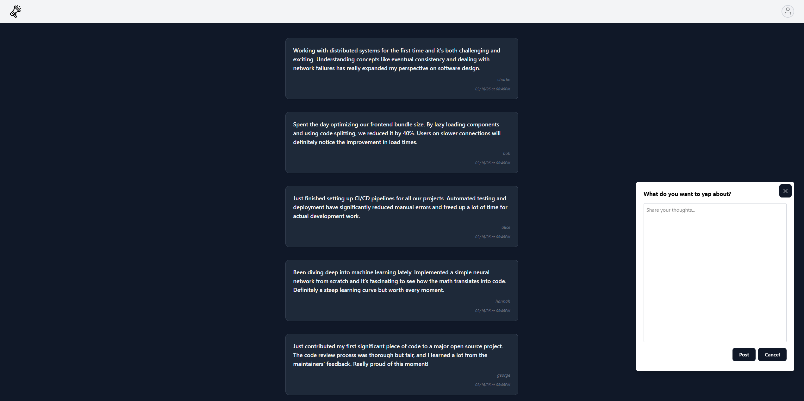
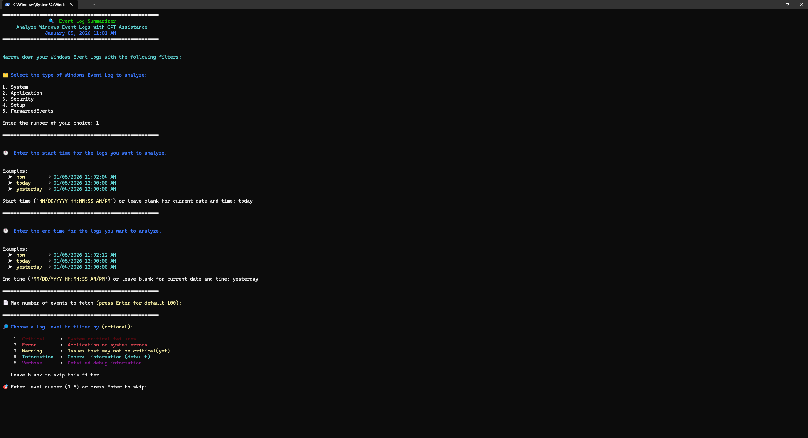
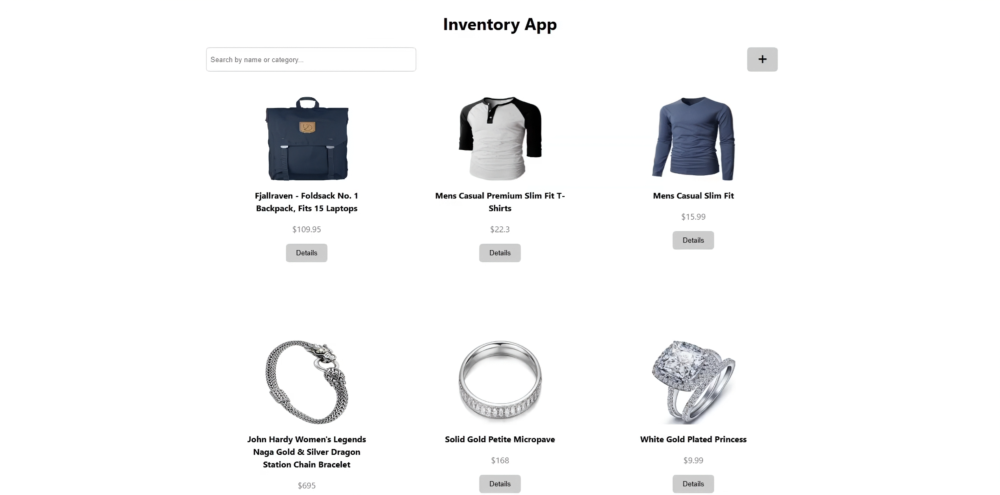
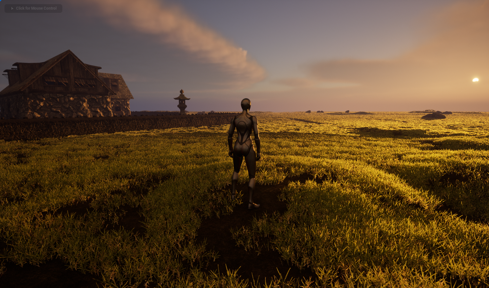
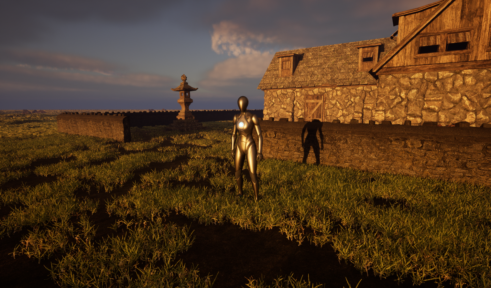
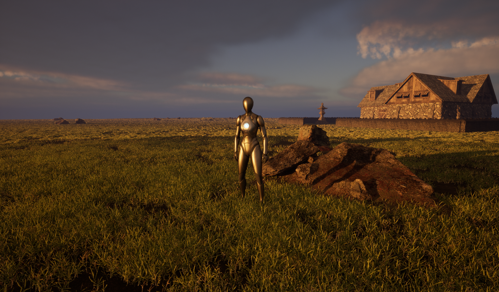
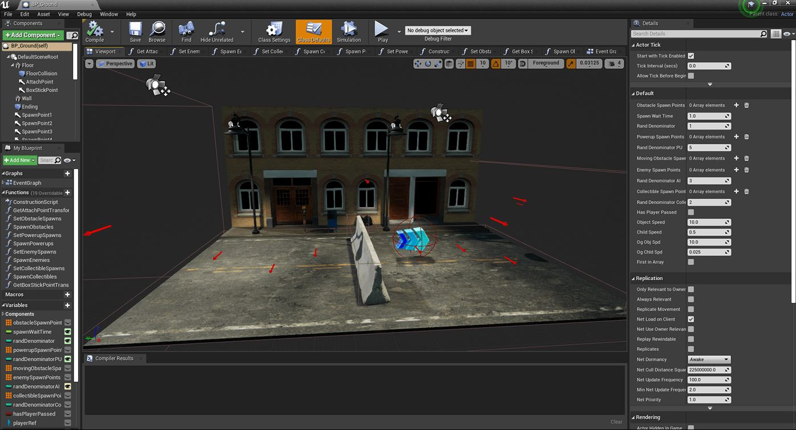
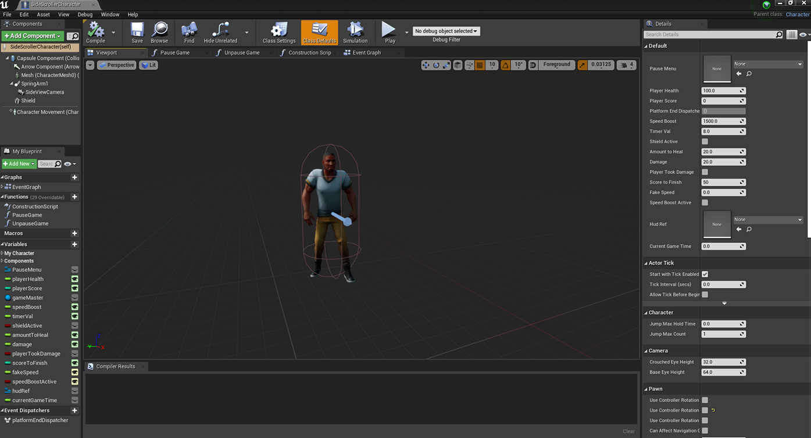

Fullstack Web Development Projects

Yapper was a collaborative full-stack project developed across three specialized modules: frontend, backend, and deployment. Frontend Module: I gained extensive experience building a production-ready React application, mastering component architecture, state management, and creating responsive user interfaces that translate design requirements into functional code. Backend Module: Working with a Python FastAPI backend taught me how to structure APIs for scalability and performance, implementing RESTful principles, handling authentication, and managing complex business logic efficiently. Deployment Module: I was introduced to modern DevOps practices using Render and GitHub Actions, implementing automated workflows for continuous integration and repository protection, ensuring code quality and reliable production releases. This project solidified my understanding of how different development domains work together and the importance of clear documentation and communication in team environments.

Event Summarizer was a solo project that showcased my ability to create practical command-line tools with a colorful Colorama interface. I engineered a sophisticated CLI application that dynamically constructs PowerShell commands for Windows Event Viewer logs based on user-specified filters including date ranges, event types, and severity levels. The integration of OpenAI's API allowed users to automatically summarize filtered logs, adding intelligent analysis to system data extraction. Additionally, I implemented multi-format export functionality supporting .md, .csv, and .txt files, demonstrating the importance of user flexibility and data portability in practical applications.

The Inventory App project was a group effort that resulted in a functional e-commerce platform combining frontend and backend expertise. I worked with a team to implement a Parcel bundler setup and utilized Sequelize for robust database management, handling complex relationships and data integrity requirements. The React frontend provided an intuitive user interface for browsing and managing inventory, while the backend infrastructure handled the critical business logic and data operations. This project reinforced the value of choosing appropriate tools for scalability and maintainability, as well as the importance of consistent coding standards when working collaboratively on larger applications.
Game Development Projects
First design in Unreal Engine 5



First game built with a team: Sidescroller

